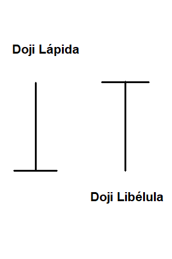
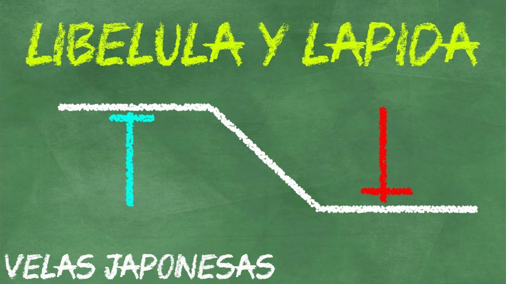

¿Qué es un Doji Libélula y un Doji Lápida?
Cómo lo mencionamos en la introducción a los patrones de velas japonesas, vamos a encontrar una infinidad de patrones, y en esta ocasión le ha tocado a nuestro querido doji.
El Doji es una vela muy común, al igual que todas sus variaciones, empezamos con esta variación más conocida en ingles cómo Gravestone-Doji (Doji Lápida) y Dragonfly-Doji (Doji Libélula).
Los doji son bastante peculiares, y muchos traders encuentran difícil su operación. Esto se debe a que es un patrón que puede representar una reversión o una continuidad, en la clase de ¿Cómo detectar si es un patrón de reversión o un patrón de continuidad? se explica cómo evitar caer en esta trampa.
Te recomiendo que veas esa clase ahora, y tras finalizar todas las clases de patrones de velas. Lo encontrarás muy esclarecedor.
El Graveston-Doji y Dragonfly Doji se caracterizan por poder ser patrones de continuidad y reversión, tenemos que tener especial cuidado apoyados en la estructura del mercado para operarlo.
Estos patrones de velas poseen una larga mecha y un cuerpo pequeño o no poseen cuerpo. El Graveston-Doji es un patron bajista, que tiene el cuerpo en el extremo inferior.
El Dragonfly Doji es un patrón alcista, que tiene el cuerpo en la parte superior, cómo puedes identificarlo en la siguiente imagen.

En el siguiente vídeo explico como puedes operar este patrón de vela tipo Doji:
